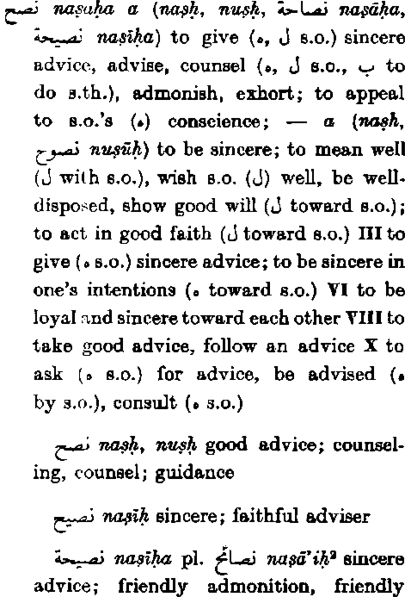
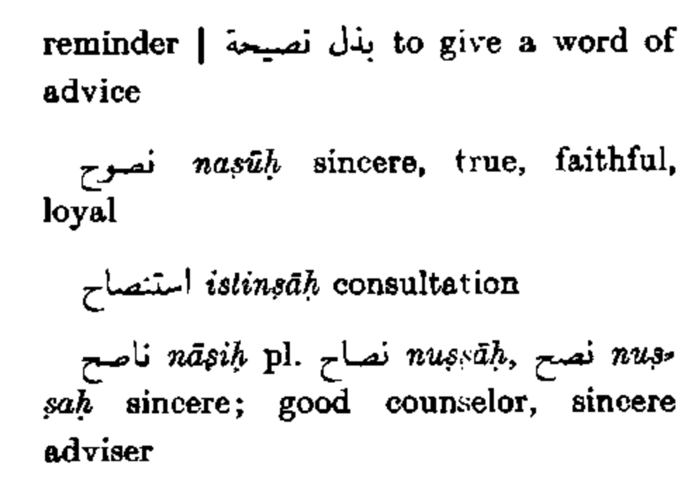
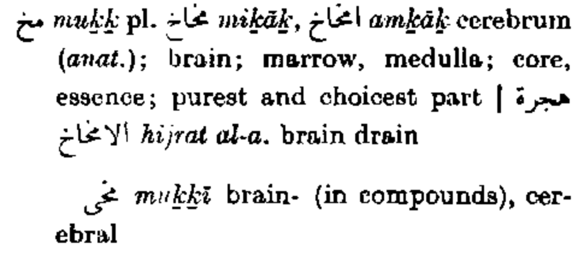
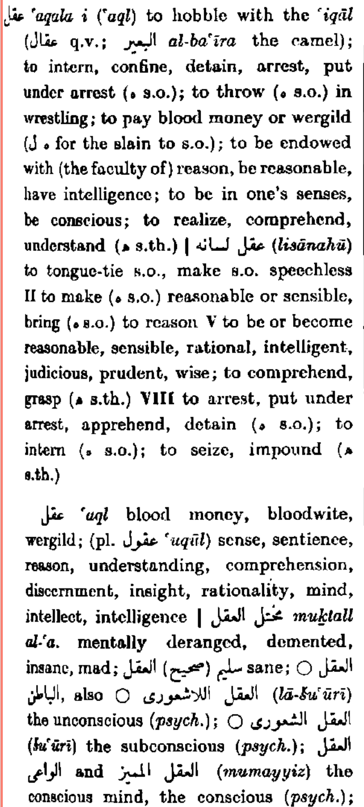
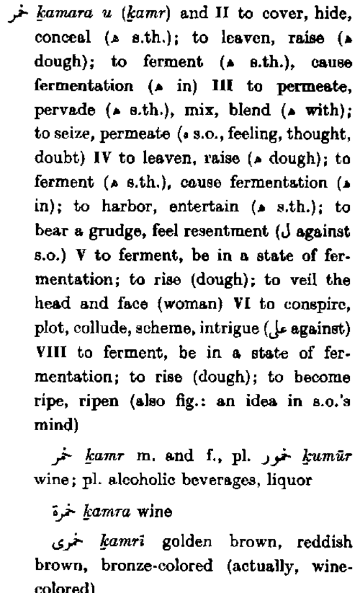

Section 3 تربيّة
3.1 Information regarding these notes and the exam
يا زملائي احترامات,
I compiled my notes (with help/supplementation from doctorsaab and Yahya) below for what we learned for the ahadith. For most hadith, what our section (section 1) and section 2 covered are identical or our section had more information than section 2, and if that’s the case there is nothing but the khulasa for bayan for that Hadith. For some Hadith, there are things covered by section 2 that we did not cover, so for those I included a section below the khulasa for what the second section covered, based off notes Najm sent me.
If you find any mistakes or anything I missed, please let me know. I did not have time to rigorously proofread.
Please check that there are no typos in quoted content, especially the Hadith and Quran ayaat.
I did not have time to add i’raab to the Ahadith, inshaallah I will add that later.
Notes on using the website:
You can search the site, change color schemes (white or black make the links clear to see), and change the size of the font on the guide bar on top of the site.
May Allah make it easy, inshaallah.
Best,
سميد
3.2 أحاديث
3.2.1 Intentions
See the section in the home page for a more general discussion on intention.
It is of utmost importance to be sincere in our intentions. Through a noble intention, a small action becomes heavy in the scales, and through a bad intention a huge action becomes light in the scales.
tamlul mizan - scales are by weight, not number
What are some general intentions we should have?
- To remove all bad desires
- To make dua that the topic we’re learning will provide solace to what difficulties we are dealing with
- To teach what we learn and inculcate it in our lives.
The heart is the king of the limbs, and the actions of the heart are the king of the actions of the limbs. (Sumeed: not sure if this is a Hadith, should double check) “Listen, there is a piece of flesh in the body. If it comes right, the entire body with be right. If it is corrupt, then the body will become corrupt. Indeed, it is the heart.”
We should have Ikhlas in our actions, else we will feel discontent. When we have Ikhlas, actions become easier and hardships become easier to bear. If we do not have Ikhlas, it becomes hard to do good actions. See the discussion on ikhlas for more detail.
Every day we come to class, it is important to renew our intentions. In class, we spent a day writing out possible intentions, and we should be keeping these in mind. Here are some:
- To please Allah
3.2.2 حديث ١
3.2.2.1 حديث
الدين النصيحة
The Religion (Islam) is to act with sincerity (Muslim)
Click here to view Hans Wehr definition for نصح
 3.2.2.2 الخلاصة لزاد الطالبين
The word nasiha is a difficult word to translate into English. It encompasses many things such as
- acting with sincerity and honesty
- giving good advice
- enjoining towards good
- desiring good
3.2.2.3 الخلاصة لخطبة المفتي
3.2.2.3.1 Hadith commentary
The word نصح:
- نصحة الثوب a man sewing his clothes
- نصحة العسل to purify honey from wax
What is the connection between these and well wishing? For 1, if there is a tear in clothes, you tie and sew it to fix it and make it whole and beautiful again. The Deen is like this for tears in relationships between people.
The ال on نصيح makes it a صفة, it tells us the significance of it. You cannot be on the Deen without being a well wisher.
According to the ulama, this Hadith constitutes \(\frac{1}{4}\) of Deen. Imam Nawawi said this is 100% of Deen.
The the rest of the Hadith, the sahaba ask Rasulullah ﷺ “لمن?” Rasulullah ﷺ said “For Allah ﷻ, His Book, His Messenger, the leaders of the Muslims, and the common people.”
This Hadith is structured with a purposeful order to the entities to which نصيحshould be given to.
- For Allah ﷻ
This means to obey and believe in Allah ﷻ.
- For His Book
This means to believe in the Qur’an and that no one but Allah ﷻ revealed it. It means to recite it as it is meant to be recited and to heed the messages it tells us.
- For His Messenger
This means to honor him before and after his life, to replicate his Sunnah, to defend and love him and his family and his companions
- For this leaders of the Muslims
This refers to the Muslim government and the scholars, since both are leaders of the Ummah (although a khalifa does not exist in the present day). This means to obey them and assist them, and to gently guide them when they make mistakes. Just like the blind spots of a car that are covered by the rear view mirrors, the Muslims should be covering the blind spots of their leaders. It also entails not demanding anarchy and encouraging Muslims to follow their leaders (protest, when justified, is warranted, but unwarranted rebellion and intentionally causing dissent is not).
Also, given the order of things the Hadith conveys, obeying Allah ﷻ is more important than anything else, so if there is something the leaders are asking of the people are asking that is against the Deen, it is more important to obey Allah ﷻ.
3.2.2.3.2 The etiquette of giving and receiving advice
- Ikhlaas
Advice should be given out of sincerity, not with the intention to disgrace. To be a well wisher means to not call people out in a bad way, to tell them privately, to talk with sincerity and gently. It also entails starting from a soft place, a place of friendliness. It is never a good idea to be uncongenial and caustic in how we approach people, even with the intent of correcting someone. When a cook would cook in the past, it would take a long time to start the fire, and short time to cook the meat.
For example, there was a time when Rasulullah ﷺ was praying Salah, and before he got up from Rukuhsomeone ran to join the Saff and said Allahuakbar while running to catch the Ruku. Rasullah ﷺ tells him “May Allah ﷻ increase you, but don’t repeat this mistake.” He ﷺ begins with praise and recognizing the good intent in the Sahabi that he had so much desire to catch the ruku.
What is Ikhlas? If someone is walking towards a fire that they do not know about, are you going to not warn them because they did not give you water yesterday? Or did something trivial that annoyed you? No, you will grab them by the waist and warn them, and let go of everything that happened in the past to save their life at that moment.
- Don’t hide naseeha
Nabi ﷺ said there are 6 rights of a Muslim on another. One of them is to give advice whenever he asks for advice. وإذ الستنصحك فنصح له. If someone asks about a person for marriage, or a school, or a business they are interested in, etc., and they come to consult you because you have some experience or expertise, you should give the full advice. If it is related to a person, such as about a person with the intent of marriage, you can speak without backbiting by saying something like “it’s not a good match.” There’s no need to give detailed reasons if it leads to backbiting.
- Giving naseeha in a proper manner
As mentioned above, gentleness when giving advice is essential. Leave out harshness and hardness and use wisdom in how you approach or respond to a person. In Surah Naml, ayah 125:
ٱدْعُ إِلَىٰ سَبِيلِ رَبِّكَ بِٱلْحِكْمَةِ وَٱلْمَوْعِظَةِ ٱلْحَسَنَةِ ۖ وَجَـٰدِلْهُم بِٱلَّتِى هِىَ أَحْسَنُ ۚ إِنَّ رَبَّكَ هُوَ أَعْلَمُ بِمَن ضَلَّ عَن سَبِيلِهِۦ ۖ وَهُوَ أَعْلَمُ بِٱلْمُهْتَدِينَ
Invite (people) to the way of your Lord with wisdom and good counsel. And argue with them in the best of manners. Surely, your Lord knows best the one who deviates from His way, and He knows best the ones who are on the right path.
Mufti Taqi Usmani
- Give advice in secrecy/privately
Imam Shafi has a poem:
ما أجمل ما قال الشافعي:
تعمَّدْني بنُصحِك في انفرادي
وجنِّبْني النصيحة في الجماعَهْ
فإن النُّصحَ بين الناس نوعٌ
من التوبيخ لا أرضى استماعَهْ
If you want to give me advice,
give it in private
Because advice in public is reprimanding
- The story of Jarirؓ (Covered by section 2)
Jarirؓ was buying a horse, and the merchant was selling it for 100 dinars. Jirarؓ says no I think the horse is worth 200. The merchant says okay, 200 dinars is good. Then Jirarؓ says no actually 300 dinars, this is a good horse. Finally, he says it is worth 600 dinars, and he buys it for that price. This is sincerity, as he was sincere even at his own detriment.
3.2.3 حديث ٢
3.2.3.1 حديث
الدعاء مخ العبادة
Supplication is the essence of worship (Bukhari)
3.2.3.2 الخلاصة لخطبة المفتي
Begging Allah ﷻ means you are a believer. Why would you knock on a door when you know no one’s there? As Iman grows, the duas become longer and more sincere, since it reflects conviction in Allah ﷻ.
If you were on a TV show were they give you the option of 5, 10, or 20 minutes to grab anything you want from Best Buy for free, would you choose 5 minutes? Of course, to grab as much as possible, one would choose 20 minutes. It is foolish to pick less time if you are aware there is a reward.
Dua begins with praise of Allah ﷻ, e.g. through Al-Fatihah, duas from the morning & evening duas booklet, or names of Allah ﷻ. Then, we make salawat. We begin with issues we are facing acutely, such as in the moment or in the 1-year program, then ask for the future, then for parents, teachers, family, classmates, etc. then we ask for our entire life, the grave, the afterlife. Finally, we end with salawat and praise of Allah ﷻ.
From section 2:
مخ: the brains of something, or the pulp of a fruit.
Click here to view Hans Wehr definition for مخ
- Maqsad of ibadah is humility and humbleness to Allah
- Dua exemplifies Allah
- One who doesn’t do dua is deprived
- One narration (ad dua huwa ibadah) says that DUA, it is ibadah (exclusive and emphasis on DUA)
The importance of dua is stressed in the Quran:
Surah Ghafir ayah 60, where dua and ibadat are used together.
وَقَالَ رَبُّكُمُ ٱدْعُونِىٓ أَسْتَجِبْ لَكُمْ ۚ إِنَّ ٱلَّذِينَ يَسْتَكْبِرُونَ عَنْ عِبَادَتِى سَيَدْخُلُونَ جَهَنَّمَ دَاخِرِينَ
Your Lord has said, “Call Me, I will respond to you. Definitely those who show arrogance against worshipping Me shall enter Jahannam (Hell) with disgrace.
Mufti Taqi Usmani
Surah Baqara ayah 186:
وَإِذَا سَأَلَكَ عِبَادِى عَنِّى فَإِنِّى قَرِيبٌ ۖ أُجِيبُ دَعْوَةَ ٱلدَّاعِ إِذَا دَعَانِ ۖ فَلْيَسْتَجِيبُوا۟ لِى وَلْيُؤْمِنُوا۟ بِى لَعَلَّهُمْ يَرْشُدُونَ
When My servants ask you about Me, then (tell them that) I am near. I respond to the call of one when he prays to Me; so they should respond to Me, and have faith in Me, so that they may be on the right path.
Mufti Taqi Usmani
3.2.4 حديث ٣
3.2.4.1 حديث
المرء مع من أحب
A person will be with whom he loves (Bukhari, Muslim)
3.2.4.2 الخلاصة لخطبة المفتي
According to Anasؓ, there was no day happier after accepting Islam than when this Hadith was revealed.
A Sahabi came to Rasulullah ﷺ complaining, that ‘When I am with you I feel good, but once I leave you I lose myself until I come running back to you. How will I be once you pass away? Your level in Jannah will be so much higher, I will never see you again.’ Rasulullah ﷺ was silent for a bit, and then the ayah was revealed (Nisa 69-70):
وَمَن يُطِعِ ٱللَّهَ وَٱلرَّسُولَ فَأُو۟لَـٰٓئِكَ مَعَ ٱلَّذِينَ أَنْعَمَ ٱللَّهُ عَلَيْهِم مِّنَ ٱلنَّبِيِّـۧنَ وَٱلصِّدِّيقِينَ وَٱلشُّهَدَآءِ وَٱلصَّـٰلِحِينَ ۚ وَحَسُنَ أُو۟لَـٰٓئِكَ رَفِيقًا
ذَٰلِكَ ٱلْفَضْلُ مِنَ ٱللَّهِ ۚ وَكَفَىٰ بِٱللَّهِ عَلِيمًا
Those who obey Allah and the Messenger are with those whom Allah has blessed, namely, the prophets, the Siddiqīn, the Shuhadā’ and the righteous. And excellent are they as companions.
That grace is from Allah; and Allah is sufficient as being the One who knows.
Mufti Taqi Usmani
According to a poem by Imam Abu Hanifa, “I love the pious even though I am not one of them.”
3.2.4.3 From section 2
عَنْ أَنَسٍ رَضِيَ اللَّهُ عَنْهُ : " أَنَّ رَجُلًا سَأَلَ النَّبِيَّ صَلَّى اللهُ عَلَيْهِ وَسَلَّمَ عَنِ السَّاعَةِ ، فَقَالَ: مَتَى السَّاعَةُ ؟ ، قَالَ: ( وَمَاذَا أَعْدَدْتَ لَهَا ) ؟
قَالَ : لاَ شَيْءَ ، إِلَّا أَنِّي أُحِبُّ اللَّهَ وَرَسُولَهُ صَلَّى اللهُ عَلَيْهِ وَسَلَّمَ . فَقَالَ: (أَنْتَ مَعَ مَنْ أَحْبَبْتَ) .
قَالَ أَنَسٌ: فَمَا فَرِحْنَا بِشَيْءٍ ، فَرَحَنَا بِقَوْلِ النَّبِيِّ صَلَّى اللهُ عَلَيْهِ وَسَلَّمَ : ( أَنْتَ مَعَ مَنْ أَحْبَبْتَ) !!
قَالَ أَنَسٌ: " فَأَنَا أُحِبُّ النَّبِيَّ صَلَّى اللهُ عَلَيْهِ وَسَلَّمَ وَأَبَا بَكْرٍ، وَعُمَرَ، وَأَرْجُو أَنْ أَكُونَ مَعَهُمْ بِحُبِّي إِيَّاهُمْ ، وَإِنْ لَمْ أَعْمَلْ بِمِثْلِ أَعْمَالِهِمْ " .
روى البخاري (6169) ، ومسلم (2640) عن عَبْد اللَّهِ بْن مَسْعُودٍ رَضِيَ اللَّهُ عَنْهُ قال : " جَاءَ رَجُلٌ إِلَى رَسُولِ اللَّهِ صَلَّى اللهُ عَلَيْهِ وَسَلَّمَ فَقَالَ : يَا رَسُولَ اللَّهِ ، كَيْفَ تَقُولُ فِي رَجُلٍ أَحَبَّ قَوْمًا وَلَمْ يَلْحَقْ بِهِمْ ؟ فَقَالَ رَسُولُ اللَّهِ صَلَّى اللهُ عَلَيْهِ وَسَلَّمَ: (المَرْءُ مَعَ مَنْ أَحَبَّ) " .
We should fall in love with the Awliya, and we should love the people of the past and today.
3.2.5 حديث ٤
3.2.5.1 حديث
الأناة من الله و العجلة من الشيطان
Calmness and patient deliberation is from Allah ﷻ and haste is from Satan (Tirmidhi)
3.2.5.2 الخلاصة لخطبة المفتي
We attribute all good to Allah ﷻ. We should hurry to do good Deen, as this type of hurry is not from Shaytaan. Our niyyah must be correct — to hasten towards good, but to be calm and collected while doing good.
An example of hastening incorrectly is in context of marriage. It is a huge decision, so one should not rush into it. Decisions like these should not be based on the immediate need, and requires thought about the future, especially with respect to how it will affect our Deen, our afterlife, and our progeny.
In the surah Isra ayah 11, عجلة is used to show how we hasten towards evil.
وَيَدْعُ ٱلْإِنسَـٰنُ بِٱلشَّرِّ دُعَآءَهُۥ بِٱلْخَيْرِ ۖ وَكَانَ ٱلْإِنسَـٰنُ عَجُولًا
Man prays for evil like his prayer for good, and man is so hasty.
Mufti Taqi Usmani
3.2.5.3 From section 2
When we do things slowly, we make less mistakes. If we rush, we are prone to making mistakes.
A poem by Imam Shafi’i:
وما أجمل ما قاله الشافعي رحمه الله:
يخاطبني السفيهُ بكل قُبحٍ
فأكره أن أكون له مجيبا
يزيد سفاهة فأزيد حِلْما
كعودٍ زاده الإحراق طِيبا
Do not allow people to annoy you. If we are met with evil, then seek refuge with Allah. From Surah Araf ayah 200:
وَإِمَّا يَنزَغَنَّكَ مِنَ ٱلشَّيْطَـٰنِ نَزْغٌ فَٱسْتَعِذْ بِٱللَّهِ ۚ إِنَّهُۥ سَمِيعٌ عَلِيمٌ
Should a stroke from the Satan strike you, seek refuge with Allah. Surely, He is All-Hearing, All-Knowing.
Mufti Taqi Usmani
3.2.6 حديث ٥
3.2.6.1 حديث
المجالس بالأمانة
Gatherings are to be kept in confidence (Abu Dawud)
3.2.6.2 الخلاصة لخطبة المفتي
What happens in a majlis stays in the majlis. Any private conversation must be kept secret. The only possible exception is where someone says they are going to do something to harm themselves or the Ummah, in which case you must do what you can to get them help or prevent the evil from happening, if there is intent for evil.
Even a side conversation, perhaps where someone takes you aside to tell you some, is considered something told in confidence.
3.2.6.3 from section 2
When you tell someone something and share it after/break their trust is called khiyanah
3.2.7 حديث ٦
3.2.7.1 حديث
الحياء شعبة من الإيمان
Modesty is a branch of faith (Bukhari, Muslim)
3.2.7.2 الخلاصة لخطبة المفتي
ما عندنا خطبة لهذ الحديث
3.2.7.3 from section 2
- “Your lord doesnt see you where he told you not to be”
- Protect the Heart and around it
- Remember Death and disintegration of your bones.
3.2.8 حديث ٧
3.2.8.1 حديث
الخمر جمّاع الإثم
Alcohol constitutes many sins (Razin)
3.2.8.2 الخلاصة لخطبة المفتي
Click here to view Hans Wehr definition for عقل
Click here to view Hans Wehr definition for خمر
عقل (reason, rationality) ties you from doing wrong and harmful things. When drunk, the mind is unable to make decisions. خمر is a shroud or a cloak, it masks عقل and covers the mind. It releases the restrictions on doing haram and evil actions.
A person is asked, would you murder? He responds, “No.” Would you commit Zina? “No.” Would you steal? “No.” Lie. “No.” Eat Haram? No." Drink? “Sure.” The man drinks, then commits all of the above.
خمر is any intoxicant that alters the mind.
3.2.8.3 from section 2
“A believer is generous and noble while a fajir is ignoble and deceitful”
- Story of Ibrahim Desai (fake beggar)
- Ghirrun means gullible
- There is no point in arguing over trivial things
- Story of Mufti Azeem’s teacher Alaudeen and how he would walk like Rasoolullah PBUH
- You should not look down upon someone who is gullible
- Faajir is someone who will cheat but he wil be detailed and stingy when it comes to his own transactions
- If you want allah to be easy on you, you have to be easy going with people
- “A believer does not get bit in the same whole twice”
3.2.9 حديث ٨
3.2.9.1 حديث
المؤمن غرّ كريم والفاجر خبّ لّئيم
A believer is simple and noble and a transgressor is deceitful and ignoble (Abu Dawud, Tirmidhi)
3.2.9.2 الخلاصة لخطبة المفتي
If someone is at an airport, and the for Salah comes and he pays extra for a janimaz. He knows he is getting ripped off, but he does not mind since he desires to pray on a janimaz. It seems like he is getting deceived, but in reality he has higher priorities for which he sacrifices for, just like if a person was starving and offered food for an exorbitant price, he would pay the price for his survival.
There are also people who seem like they are getting deceived, but in reality are generous. In another Hadith, it comes that a believer does not get bit twice from the same hole, but this is not applicable to deliberate generosity, where a person knows he is getting deceived but continues to give out of generosity.
3.2.10 حديث ٩
3.2.10.1 حديث
الظلم ظلمات يوم القيامة
Oppression will be darkness on the Day of Judgement (Bukhari)
3.2.10.2 الخلاصة لخطبة المفتي
Believers will have noor rushing in front of them. Oppressors and disbelievers will have layers of darkness. An “oppressor” is a general term for someone that takes the right of something else. It is better to be the oppressed than the oppressor.
What is ظلم?
ظلم — وضع شىء في غير محله
Putting something in the wrong place
For example, putting your glasses on your feet, or your shoes on the desk.
ظلم can be done to oneself. People were put on earth for a reason, so to go against it is ظلم. The limbs have certain purposes for which they were given to us, so to use them for sinning is ظلم since that is not the reason for which they were created. Furthermore, by committing sins, one oppresses oneself by putting themselves into hell.
There is no greater ظلم than shirk, however. No matter how many rights of the people are transgressed, the worst ظلم is to deny Allah ﷻ or His oneness since that is a transgression of His rights.
In humanism, it is often claimed that all that matters is how we treat others and social justice. But no one cares if you are praying. This is ظلم to yourself and to Allah ﷻ.
3.2.10.3 from section 2
- Darkness and Oppression have the same root
- If a person has oppressed people, they won’t have noor on the DOJ
- On the DOJ, the hypocrites will ask the believers to wait for them to get some of their noor, they will be told if you want noor, go over there (to a deception). When they go, a big wall will come one side with rahma and the other with ahzab. The munafiqeen will try to deceive people and Allah will show them oppression
- Zhulm - to place something in an inappropriate place
- The biggest oppression is not believing in Allah and committing shirk
- Hadith about “Islam being strange”
3.2.11 حديث ١٠
3.2.11.1 حديث
الدنيا سجن المؤمن وجنّة الكافر
The world is a prison for the believer and a paradise for the disbeliever (Muslim, Tirmidhi)
3.2.11.2 الخلاصة لخطبة المفتي
A non-Muslim cobbler is sitting on a street, while a scholar on a fancy horse comes by. The cobbler says something under his breath, so the scholar turns around and inquires, “What did you say?” The cobbler says, “You don’t even follow what your Prophet is saying,” and he quotes this Hadith, and continues, “look how rich you are and how poor I am. You’re living in a Jannah while I live in a prison.” The scholars ponders and responds,
- If I die in the state of Iman and Allah ﷻ is pleased with me, then the paradise that awaits me is so luxurious that the life on earth will be so terrible in comparison it will seem like a prison. If you disbelieve, then even if life on earth is terrible, Jahannum will be so much worse.
- A believer is in a prison because he is not free to do what he wants. Prison has a warden, you sleep when you are told, eat what you are told to eat, do what you are told to do. Every aspect of life is controlled. Life outside the prison is free — a kafir can do whatever, nothing will stop him because he does not believe in the consequences and accountability in the eyes of Allah ﷻ.
3.2.12 حديث ١١
3.2.12.1 حديث
اليد العليا خير من اليد السفلى
The upper [giving] hand is superior to the lower [taking] hand (Bukhari, Muslim)
3.2.12.2 الخلاصة لخطبة المفتي
Giving is much better than taking. If bringing a gift for an elder, it should be given with the hand under the gift.
When giving, do not mention the favors you have done for them; do not count favors. Do not give something then start saying something along the lines of, “Remember how I gave you this this time and that that time” in order to make them feel guilty or stress the favor you are doing upon them.
3.2.13 حديث ١٢
3.2.13.1 حديث
الطهور شطر الإيمان
Purity is half of faith (Muslim)
3.2.13.2 الخلاصة لخطبة المفتي
Notes I transcribed from Yahya:
- طهور means wudhu and iman = salah (wudhu \(\frac{1}{2}\) of salah)
- طهور refers to cleaning the heart of kufr, shirk, sins, etc.
- cleanings from spiritual/ritual impurity (Hadith as-shar+akbar)
Before you fill up a glass with milk, you make sure the glass is clean.
internal and external are linked. If the heart is clean, he will strive to clean his outer/physical self.
Muslims cannot bear to stay in a state of impurity. For example, a dirty bathroom or in a state of janabah (not taking a shower).
A Muslim’s home and possessions must be very clean. To be clean internally, you have to be clean externally. For example, before taking shahada, people take a shower. Not having wudhu is a minor impurity and prevents one from praying or touching the Quran. We should make a point of always being in wudhu, which will help shield against Shaytaan. In a more general sense, we should make sure to always be clean.
Staying in a state of impurity attracts Shaytaan, just like honey attracts ants.
Magicians gain sihr by remaining in a state of impurity and by desecrating holy symbols
A study showed that bath towels in people’s houses had bacteria common with feces because of not doing istinja. Many people live in filth.
- If one is “clean” internally but not particular about cleanliness, there is something wrong.
If we cannot keep our shower/toilet clean, we will not be able to clean our heart and keep it clean.
Make and intention to desire cleanliness and act on it.
Once Muftisaab went to a Masjid; the wudhu area was filled with insects, the rooms were dirty, everything was sticky, all while people were driving Audis and Mercedes. “What is the problem here?”
Have ihsan in everything, including in the manner with which we clean.
Having a clean place will lead to happiness, and living in dirt is a source of misery and depression.
3.2.13.3 from section 2
- Wudhu is half of salah.
- Cleanliness is 50% of your salah
- Allah will not allow your iman to be wasted
- Salah done before the Qibla change (Iman here means salah)
- The word iman is referred to as salah
- When a person becomes muslim, he becomes clean (fresh slate)
- Remaining pure and clean is is so important that it is half of your faith
- Nazafa - external body being clean
- Tahara - being pure
- If we want our hearts to be pure and clean, we have to start from somewhere. We start with our body first. Before someone takes shahada, he is taught wudu first. -Part of our tarbiya is cleanliness
- Hadith of punishment in grave for not being careful with their urine.
- If you are okay with not being clean (i.e urine), then there is something wrong with your heart.
- Prophet PBUH put a lot of emphasis on miswaak to show that every part of your mouth should be clean and always clean
- This shows the extreme high level of emphasis in our deen about cleanliness
- Cleanliness is a representation of our heart
“ Ya Allah, you control my heart, I have no control of my heart. I will do what I can do if it means cleaning up everything around me”
- How will we answer to Allah on the day of judgement if our dirtiness is a reason someone leaves the masjid.
- The masjid is a place you are praying to Allah, the closest we will ever be to Allah. How can we accept the place we are putting our heads down on to be dirtY?
- It should be your love for allah that keeps things around you clean
3.2.14 حديث ١٣
3.2.14.1 حديث
الجرس مزامير الشيطان
Bells are the flutes of Satan (Muslim)
3.2.14.2 الخلاصة لخطبة المفتي
Some South African car jackers were interviewed once, “How do you commit such atrocious murders and evil deeds?” They said we take drugs. It alters their mind, which enables them to do extremely evil action.
When the Saudi government conspired to kill Jamal Kashari, they set up an elaborate plan to remove accountability. In the end, the murderer was identified, and when he was asked how he could do something so atrocious as sawing off the limbs of Jamal as he died, he said “I just put music on and zoned out, and did my job.”
When Rasulullah ﷺ would recite Quran, people would say this is so beautiful it could not have been written by a man but a greater being. Music is so evil, it is like it is written by the devil himself.
3.2.14.3 from section 2
- The continous ringing of a bell promotes ghafla (heedlessness).
- Musical instruments are a tool of shaitan to distract you from worshipping Allah
Books by Khalid Baig - Slippery Stone - First Things First
3.2.15 حديث ١٤
3.2.15.1 حديث
الطعام الشاكر كالصائم الصابر
The one who eats and is thankful is like the one who fasts and is patient (Tirmidhi, Darimi)
3.2.15.2 الخلاصة لخطبة المفتي
Shukr is done through three limbs:
- بالقلب
- بالسان
- بالأعمال
Do not feel guilty for having material things, instead do shukr. Do not feel envious for not having material things, instead be patient.
- فتنة السراء fitnah of سرور, happiness
- فتنة الضراء fitnah of difficulty
Umarؓ said that the trial of ease (shukr) was more difficult that than the trial of hardship (sabr). The companions had faith after the trial of hardship, but began to have doubts during the trials of wealth.
One day, Umarؓ comes to the masjid and he sees wealth, gems and gold reaching the roof of the masjid. A sahabi sees him and says are you not happy? Umarؓ responds, “No, I am really worried I cannot imagine this wealth is good for us. I cannot imagine this wealth is good if it was given while I am Khalifa and not in the time of the Khilafa of Abu Bakrؓ. I cannot imagine it is good if it was given to us and not during the time of Rasulullah ﷺ.”
Perhaps the good we are given in this world, should we not be grateful for it, will only take away what reward we would have gotten in the Akhirah. In surah Ahqaf ayah 20, Allah ﷻ says:
وَيَوْمَ يُعْرَضُ ٱلَّذِينَ كَفَرُوا۟ عَلَى ٱلنَّارِ أَذْهَبْتُمْ طَيِّبَـٰتِكُمْ فِى حَيَاتِكُمُ ٱلدُّنْيَا وَٱسْتَمْتَعْتُم بِهَا فَٱلْيَوْمَ تُجْزَوْنَ عَذَابَ ٱلْهُونِ بِمَا كُنتُمْ تَسْتَكْبِرُونَ فِى ٱلْأَرْضِ بِغَيْرِ ٱلْحَقِّ وَبِمَا كُنتُمْ تَفْسُقُونَ
And the day the disbelievers will be presented before the Fire, (it will be said to them,) “You have consumed your good things in your worldly life, and have enjoyed them. So, you will be punished today with the torment of humiliation for the arrogance you used to show on earth with no right (to do so), and for the sins you used to commit.
Mufti Taqi Usmani
Rasulullah ﷺ said, ‘I am not worried about poverty, I am worried about wealth (referring to the Ummah) because people will compete in amassing wealth.’
We sympathize with everyone besides ourselves because they are dealing with death, poverty, and destruction, but we do not realize the test given to us is just as difficult. Those people recognize their fitnah and increase in their iman. But in our condition, we have everything, and it only increases people in their denial of Allah ﷻ.
The example of those going through difficulty: Paraphrased Hadith: A Muslim does not get pricked by a thorn except it is sadaqa/a means of cleansing sins.
On the other hand, for those of us receiving blessing, ease, and rizq, the example is the following:
On a hot day at noon, the prophet ﷺ, Abu Bakrؓ, and Umarؓ all came out of their houses in extreme hunger and thirst. They decide to walk together to abate their hunger, and as they are walking they come across the house of an Ansar. The Ansar was not home, so his wife invited them to wait for the Ansar. When the Ansar arrived, he sees the three most beloved people at his home and rushes to offer them dates and water. Even just those dates and water that they were given after such difficulty, Rasulullah ﷺ says they will be asked about even this.
The condition of the believer is that he is always in a state of shukr, because he realizes that he will never be able to cover all the things to be thankful for. Such is the nature of thankfulness — it is tasulsul, that we give shukr through our heart, our tongue, or our actions, and realize that the ability to give thanks is through the blessing of Allah ﷻ, so we make shukr for that. Every blessing is a blessing manifold, and thus the only way to be grateful is to be constantly grateful as a constant reminder of Allah ﷻ’s existence and Iman in our hearts.
3.2.16 حديث ١٥
3.2.16.1 حديث
البادئ بالسلام بريء من الكبر
The one who initiates the salam is free of pride (Bayhaqi, Shu’ab al-iman)
3.2.16.2 الخلاصة لخطبة المفتي
If a person can’t hear the salaam, then the salaam was not given. It is not good to mumble a salaam. Salaam must be said properly.
THE REMAINING SECTIONS ARE NOT FOR THE UPCOMING EXAM, BUT ARE THE REMAINING HADITH AND FAWAID WE LEARNED DURING THE CLASS
IT IS ALSO INCOMPLETE
3.2.17 حديث
3.2.17.1 حديث
3.2.17.2 الخلاصة لخطبة المفتي
3.2.18 حديث
3.2.18.1 حديث
3.2.18.2 الخلاصة لخطبة المفتي
3.3 فوائد
3.3.1 Dua before beginning anything
رب يسر ولا تعسر وتمم بخير وبك نستعين يا فتاح
3.3.2 Qari Mohammad Sayed Siddique Ahmad Bandwi
Qari Siddique Bandwi was born in Baanda, India in 1919 (“Hazrat Maulana Mohammad Sayed Siddique Ahmad Bandwi” 2011). He was of such character and piety that when sheikh Abdul Fattah, a renowned Syrian scholar, asked Maulana Shabiq (the principal of Darul Uloom Zakariyya) about awliyah he could visit, Maulana Shabiq referred Qari Siddique Bandwi. Sheikh Abdul Fattah traveled all they way to the small city of Baanda to visit him.
Another incident regarding Qari Bandwi is when he was collecting donations for a madrasa in baanda. He was taking the train home late at night in the remote village, bringing with him the bag of funds he collected, when a group of thieves stopped him and staged a stick up. They told him to leave the money, but Qari Bandwi said he can’t give the money since it did not belong to him. The thieves did not care and wanted the money anyway, so Qari Bandwi threw them the bag and said, “let’s see how far you go.” The next day, someone came to Qari Bandwi and said there are people in the city looking for him. It was the robbers; they were unable to make their escape ― it was like there was an invisible barrier preventing them from leaving the city.
3.3.3 The concept of فيض
فيض
Hans Wehr flood, inundation, deluge; emanation; superabundance, plenty, copiousness, abundance; stream
معنى إصطلاح The internal Nur, from a heart
Abu Bakr, one of the awliyah in Chicago, had said (paraphrased), “There are two steps for a Mu’min to take. The first step is to squash the nafs, the second is to enter paradise. I have taken the first step, and I am waiting for the second.”
He had also said “The one who cannot benefit from the silence of the Ulamah will not benefit from their speech.”
This is the concept of فيض. It is the moment when Angel Jibreel hugged Nabi ﷺ tightly in the cave of Hira. It is the feeling of spiritual rejuvenation felt in the presence of the awliyah. It is part and parcel to why the Islamic tradition emphasizes attainment of knowledge from scholar to student in an intimate manner, where knowledge is not just information but an exercise in connecting heart-to-heart. We hope and pray that in this manner, by staying close with those who are close to Allah ﷻ, we too can get closer to Allah ﷻ.
One of the scholars would invite the students to his house from Asr to Maghrib, and offer them tea. They would not say anything in that time, just sit and do Adhkar. Just by sitting in the presence of the scholar, the students could find benefit in their own spiritual growth.
3.3.4 Miracles
In the story of the theives and Qari Siddique Bandwi, the supernatural incident where the thieves were unable to leave the city due to an invisible barrier they felt is an example of a كرامة.
معجرة is the supernatural phenomenon for a prophet. إعجاز is literally something inimitable and wondrous. For example, Rasulullah ﷺ splitting the moon, or Musa (AS) splitting the sea.
كرامة is where a supernatural incident happens at the hands of a wali of Allah ﷻ. It honors the wali and proves their nearness to Allah ﷻ. Every كرامة is a معجرة of their prophet because they would not happen without the wali following the sunnah of their prophet.
إرحاص a supernatural phenomenon done by a kuffar to deceive others.
إستدراج a supernatural phenomenon that deceives oneself. It is literally to get reeled in. For example, fir’aun seeing the sea split believed that it was his ability that led to the sea being split, but it was not his ability, it was Musa (AS). By fooling himself, fir’aun found greater conviction in his ضلال.
إستدراج is extremely important for us to be aware of. درج means levels, and إستدراج works in levels, step by step people fall of the deen. For example, if someone is doing da’wah on youtube, and they start to gain a significant following, to be wary of إستدراج means to realize that the popularity could be a test of one’s ego.
We see this wariness among the Sahaba. During the khilafa of Umar (RA), he saw the Masjid filled with gems, and gold, and riches. The Muslims were joyful, but Umar (RA) was sad. He asked if this was a blessing, why was it not given to Rasulullah ﷺ or Abu Bakr (RA)? He realized that the blessing given to him and the Muslims was a test.
Another example is Sulaiman (AS). The ayah in the Qur’an discusses this (27:40):
قَالَ ٱلَّذِى عِندَهُۥ عِلْمٌ مِّنَ ٱلْكِتَـٰبِ أَنَا۠ ءَاتِيكَ بِهِۦ قَبْلَ أَن يَرْتَدَّ إِلَيْكَ طَرْفُكَ ۚ فَلَمَّا رَءَاهُ مُسْتَقِرًّا عِندَهُۥ قَالَ هَـٰذَا مِن فَضْلِ رَبِّى لِيَبْلُوَنِىٓ ءَأَشْكُرُ أَمْ أَكْفُرُ ۖ وَمَن شَكَرَ فَإِنَّمَا يَشْكُرُ لِنَفْسِهِۦ ۖ وَمَن كَفَرَ فَإِنَّ رَبِّى غَنِىٌّ كَرِيمٌ
Said one who had knowledge of the Book: “I will bring it to thee within the twinkling of an eye!” Then when (Solomon) saw it placed firmly before him, he said: “This is by the Grace of my Lord!- to test me whether I am grateful or ungrateful! and if any is grateful, truly his gratitude is (a gain) for his own soul; but if any is ungrateful, truly my Lord is Free of all Needs, Supreme in Honour!”
In summary, whenever there is a fadhal from Allah ﷻ, we should be grateful and aware that these things are a test.
3.3.5 Difficulties in memorizing
Imam Zaid Shakir said that when joined Madrasa, he was about 29. He spent an entire day memorizing the first line of his Nahw lesson. At the end of the day, he found that he forgot that single line he spent the entire day memorizing. He spent days and days on that single line.
It takes time to learn and memorize, and there will be times where it seems difficult or even impossible. But it is important to remember that Allah ﷻ chose us to be here, and it is by his will that we remember anything and his will that we forget, and we just need to put our most sincere and best effort forward in hopes that He will accept our efforts.